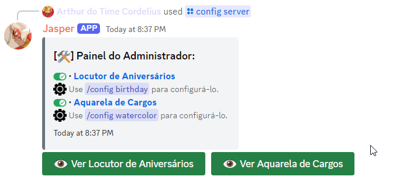

∎ Configurar essa função é coisa de gente com permissão de Administrador. E, claro, eu preciso da permissão de Gerenciar cargos para que tudo funcione sem problemas.
∎ Segue um pequeno tutorial de como configurá-la:
1. Use o comando /config watercolor e escolha o canal de texto que
preferir. Eu recomendo criar um canal só para isso, mas a decisão é sua.
2. Depois de usar o comando e eu te confirmar que deu certo, a funcionalidade já vai estar ativada no
seu servidor! Prático, né?
3. Também vou mandar uma mensagem de confirmação no canal escolhido, avisando que todas as mensagens
ali vão servir pra definir a cor do cargo dos membros.
4. Para utilizar a Aquarela, você deverá enviar um código
hexadecimal (exemplo: #fcba03) no canal de texto.
Se o que for enviado for um código válido, um cargo específico para você será criado utilizando a cor desse
código e ele será movido para o topo da sua lista de cargos (isso se eu tiver permissão para interagir com
você!).
Se você já tiver um cargo de cor e mandar outro código, a cor do cargo vai ser atualizada com o novo código.
atualizada para o código mais recente.
5. Prontinho! A Aquarela já está habilitada no servidor. Para editar as configurações, basta
usar o comando /config watercolor novamente. Para desabilitar, use o comando
/config server e selecione o botão.



∎ Espero que você aproveite! Qualquer dúvida, sinta-se livre para perguntar no meu canal de suporte.
Publicado . Dependendo da data de publicação, o texto pode estar levemente desatualizado.